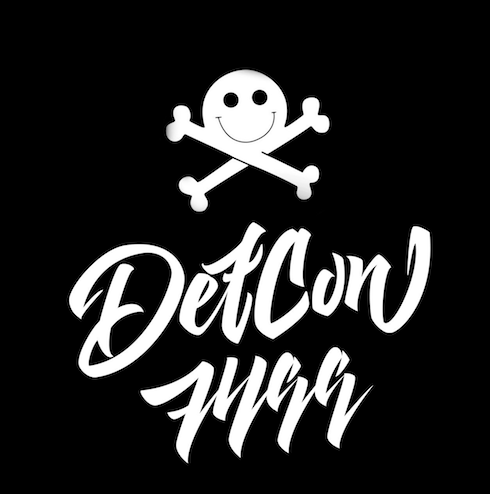

RADIO STATION
Listen DC7499 radio station on Shoutcast and Radionomy.
Also isten to this station in your media player dc7499.m3u
Archives of all meetings DC7499 here.
Archives of our meetings are available on our website in English only, to read them in Russian, visit the portal of our best friend Xakep Magazine.
All photos from our events are available in Flickr.
All global alert about the meetings DC7499 you can get on Twitter, Facebook, VK, channel Telegram @DEFCON and chat @DC7499 (more than 900 people).
Our group organizes meetings, so-called "villages", look for more information on the websites Hardware Village and Lockpick Village.
Make your contributions to DC7499 knowledge base!
Listen DC7499 radio station.
Our mirrors defcon.moscow
DC7499[at]defcon.su
Our PGP key here.